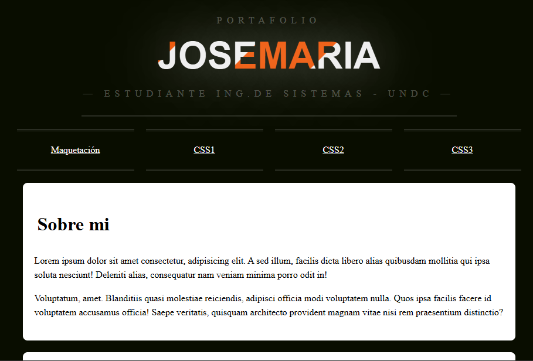
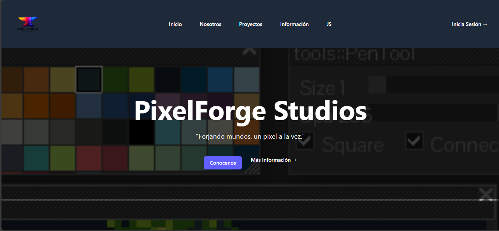
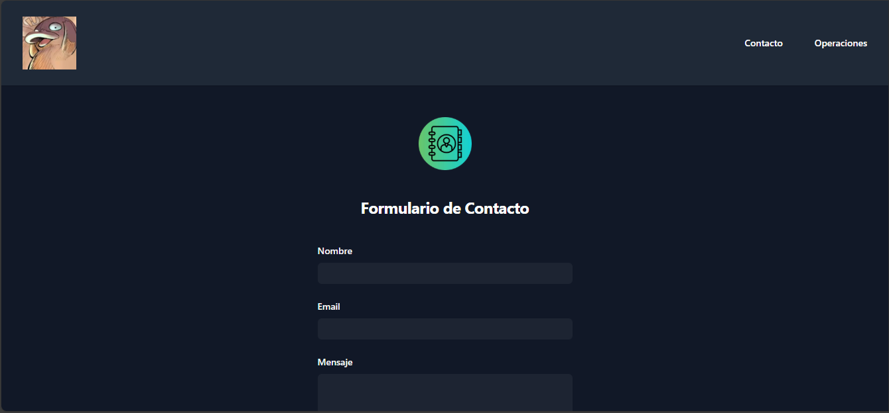

Proyectos
Bienvenido a mi página de proyectos. Aquí encontrarás una colección de mis trabajos y proyectos realizados en diferentes tecnologías web.

Portafolio CSS
Diseños y maquetaciones con CSS puro, destacando animaciones y layouts modernos.
Ver proyecto

Tailwind CSS
Ejercicios y proyectos aplicando utilidades de Tailwind para interfaces modernas.
Ver proyecto

Praxis Correo y Operaciones JS
Aplicación JavaScript para gestión de correos y operaciones de práctica funcional.
Ver proyecto